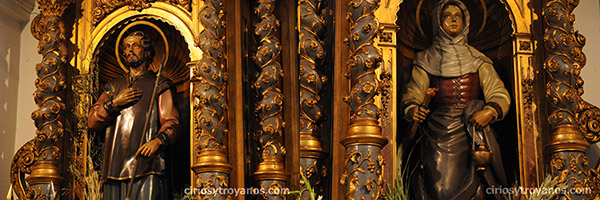
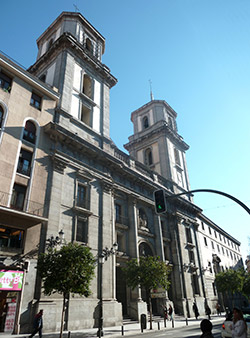
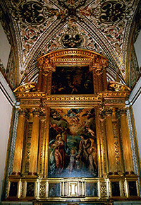
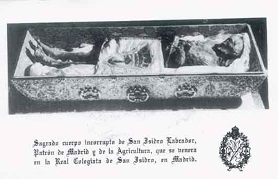
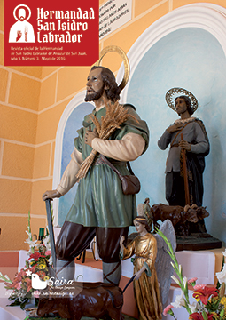
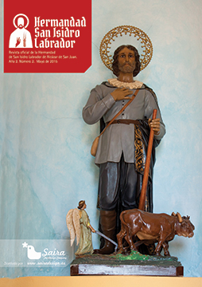

Real Colegiata de San Isidro Labrador en Madrid
Autora: Yolanda Gallego Monedero
En 1620 el arquitecto Pedro Sánchez
diseñó la Colegiata de San Isidro de
Madrid, quien comenzó dos años
después y hasta 1633 a dirigir su
construcción, en el terreno en que
en el siglo XVI había sido construida
la parroquia de San Pedro y San
Pablo. Posteriormente, los arquitectos
jesuitas Francisco Bautista y Melchor
de Bueras, se encargaron de acabar su
construcción, en el año 1664.
La emperatriz María de Austria,
hija de Carlos I, legó su fortuna a la
Compañía de Jesús en testamento,
a fin de que fuera construida esta
Colegiata en el solar de la iglesia, que
fue derribada para tales fines.

Santa María de la Cabeza, esposa de San Isidro
Labrador. Real Colegiata.
Trece años antes de la terminación
del templo, el 23 de septiembre de
1651, se consagró, siendo adscrito a
dicha compañía y bajo la protección
de San Francisco Javier. En 1767
fueron expulsados los jesuitas,
transformándose en Colegiata, y
quedando en 1769 bajo la advocación
de San Isidro Labrador. Ese mismo
año, se trasladó desde la iglesia de
San Andrés a la Colegiata el cuerpo de
San Isidro (que había sido custodiado
desde el siglo XVI en la Capilla de San
Isidro) y las reliquias de Santa María
de la Cabeza.
En 1885, con la constitución de la
diócesis de Madrid, pasó a ser la
catedral provisional de esta ciudad,
hasta 1993, cuando recuperó la
categoría de colegiata.
En plena Guerra Civil, en el año
1936, la colegiata sufrió un incendio
intencionado, destruyéndose en
él numerosas obras de arte, y
quedando dañada la estructura del
edificio, especialmente las cubiertas.
Acabada la guerra, el arquitecto
Javier Barroso, dirigió las obras de
reparación y remodelación de la
colegiata, modificándose algunos de
los elementos originales del edificio,
y terminándose las dos torres de la
fachada original, que aún habían
estado inacabadas.
Desde 1978 es sede canónica de la
Hermandad de Nuestro Padre Jesús
del Gran Poder y María Santísima de
la Esperanza Macarena. Si se desea
ver en procesión a estas venerables
imágenes sevillanas, puede hacerse la
tarde del Jueves Santo.
Arquitectónicamente hablando,
la Colegiata de San Isidro es uno
de los edificios religiosos más representativos del Madrid del siglo
XVII. De estilo barroco, cuenta con
una planta de cruz latina de una sola
nave, con bóveda de crucería, capillas
laterales, y cúpula de estilo jesuita.
La fachada principal está realizada
en piedra de granito, con un cuerpo
central de cuatro columnas corintias,
en el que impera una escultura
grupal con las efigies de San Isidro
y Santa María de la Cabeza. A su
vez, las columnas son coronadas por
capiteles con doble hilera de hojas de
acanto con molduras de ovas, obra del
arquitecto Francisco Bautista.
A ambos lados del cuerpo central dos
pilares corintios sirven de apoyo a las
torres laterales, de planta cuadrada,
acabadas en capiteles octogonales,
rematados con aguja en la reforma
posterior a la guerra civil.
La cúpula encamonada, falsa
cúpula de yeso, con armazón de
madera y capitel empizarrado,
es de origen francés, introducida
por Francisco Bautista en esta
construcción. Posteriormente, el
código arquitectónico del agustino
recoleto fray Lorenzo de San Nicolás
se encargó de divulgarla entre los
alarifes castellanos, justificando su
éxito por el escaso peso que ofrecía
y el abaratamiento de los costes, al
prescindir de la piedra como material
de construcción. Se convertía así en la
cubierta más idónea para las épocas
de dificultades financieras.
En el interior de la Colegiata, y
después del incendio del 36, se
conserva el sarcófago con las reliquias
de San Isidro, custodiadas hoy en
día en el retablo mayor, y algunas
pinturas y esculturas. Sirva como
ejemplo el retablo “La Sagrada
Familia”, que preside la capilla del
Pilar, obra del pintor Sebastián de
Herrera Barnuevo.
El simple hecho de que Madrid
fuera la capital de España y de la
conveniencia de la monarquía de
poseer instituciones eclesiásticas
propias en la capital, hizo que
esta iglesia, que no era sino un
Real Colegio de Jesuitas, pasara
a ser por efecto de la burocracia,
Real Colegiata. Si bien es cierto,
sus miembros poseían el título de
canónigos, clérigos que se reunían
en vida común, subordinados a
un prelado o superior bajo reglas
especiales de disciplina y obediencia.
Así, entre 1790 y 1800, el “Real
Colegio” pasa a ser “Real Colegiata”.
Desde 1767, San Isidro se convirtió
en parroquia, reteniendo el título
de Capilla Real, que lo ostentaba
desde la época de Felipe IV. Son
estos mismos capellanes, eso sí muy
numerosos con Carlos IV, los que se
transformaron en canónigos en virtud
de Bula de Pío VI, de 20 de mayo de
1788. Según esta Bula los capellanes
de San Isidro llevarían ad personam el
título de canónigos, con las mismas
prerrogativas que los de las Iglesia
Catedrales. La Bula va dirigida a
los capellanes, no a la Parroquia, ni
convierte a San Isidro en Colegiata.
Sin embargo, la Parroquia y Real
Capilla de San Isidro de Madrid pasó a
denominarse Colegiata sólo porque su
clero tenía el título de canónigos por
arte de la Bula de Pío VI.
En 1815 regresan los jesuitas
a San Isidro. Poco decir de sus
relaciones con los canónigos de Pío
VI, por lo que en 1818, quedan los
canónigos suprimidos, aunque se
restablecieran de nuevo entre 1820
y 1823. La Iglesia de San Isidro
permaneció en manos jesuitas hasta
la desamortización. No obstante,
dado que la Real Capilla no se había
disuelto, ni la Bula de Pío VI había
sido derogada, tras la segunda
desaparición de los jesuitas, vuelve a
haber capellanes en San Isidro, que,
de nuevo, reclamaron el uso de su
condición de canónigos.
La Bula de creación de 1885
“oficializa” canónicamente San Isidro
en la medida que ya la denomina
Colegiata, aunque en realidad lo
que hace es transformar el Cabildo
de Capellanes existente con título
nominal de canónigos en un
verdadero Cabildo Catedralicio. Este
mismo Cabildo es el que se traslada
a la Catedral de la Almudena una
vez inaugurada, de modo que no
hay cabildo nuevo en San Isidro, si
bien recuperó, a efectos puramente
honoríficos y quizás sólo en virtud
de la mención de la Bula de 1885,
el título de “Colegiata” que jamás
ostentó de derecho.
|
|

Revista San Isidro 2015

Revista San Isidro 2015
|